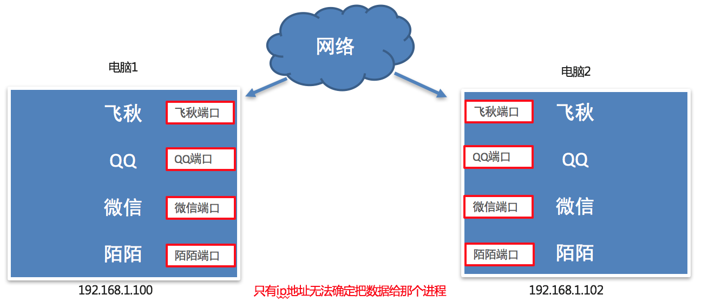
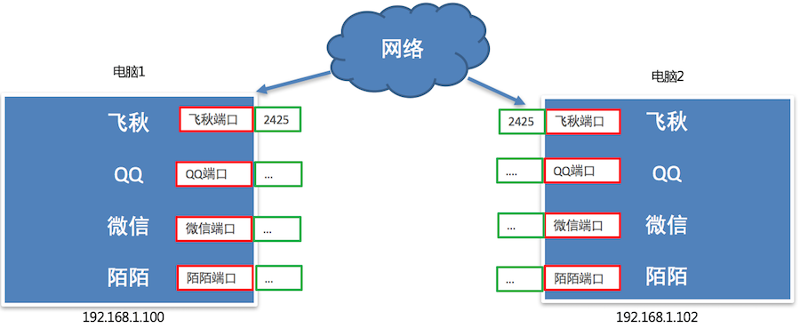
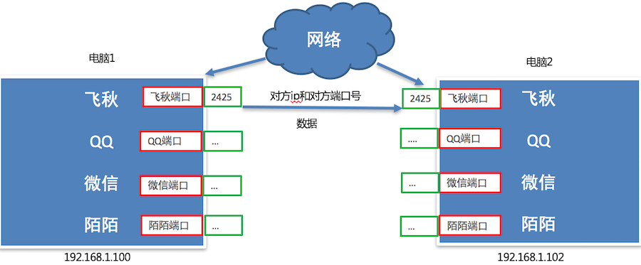
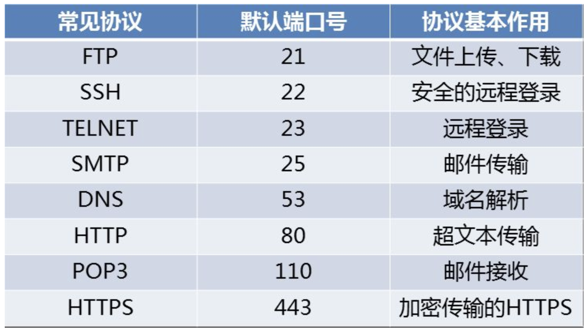

<!DOCTYPE lake>
<h3 data-lake-id="gSoZL" id="gSoZL"><span data-lake-id="u4e690047" id="u4e690047" style="color: rgba(0, 0, 0, 0.87)">问题思考</span></h3><p data-lake-id="ua22cd6a0" id="ua22cd6a0"><span data-lake-id="u65b589fb" id="u65b589fb" style="color: rgba(0, 0, 0, 0.87)">不同电脑上的飞秋之间进行数据通信，它是如何保证把数据给飞秋而不是给其它软件呢?</span></p><p data-lake-id="ua7625454" id="ua7625454"><strong><span data-lake-id="uf6303c34" id="uf6303c34" style="color: rgba(0, 0, 0, 0.87)">其实，每运行一个网络程序都会有一个端口，想要给对应的程序发送数据，找到对应的端口即可。</span></strong></p><p data-lake-id="u2eaa73d1" id="u2eaa73d1"><strong><span data-lake-id="u169738dc" id="u169738dc" style="color: rgba(0, 0, 0, 0.87)">​</span></strong><br/></p><p data-lake-id="u0d4b4afe" id="u0d4b4afe"><strong><span data-lake-id="ufe74f4ed" id="ufe74f4ed" style="color: rgba(0, 0, 0, 0.87)">端口效果图:</span></strong></p><p data-lake-id="u54a06136" id="u54a06136"></p><h3 data-lake-id="Mzlml" data-lake-index-type="2" id="Mzlml"><span data-lake-id="ud1c05741" id="ud1c05741" style="color: rgba(0, 0, 0, 0.87)">什么是端口</span></h3><p data-lake-id="u458009a6" id="u458009a6"><strong><span data-lake-id="ub4479f74" id="ub4479f74" style="color: rgba(0, 0, 0, 0.87)">端口是传输数据的通道</span></strong><span data-lake-id="uba2b0d19" id="uba2b0d19" style="color: rgba(0, 0, 0, 0.87)">，好比教室的门，是数据传输必经之路。</span></p><p data-lake-id="ue5161693" id="ue5161693"><span data-lake-id="u0223276a" id="u0223276a" style="color: rgba(0, 0, 0, 0.87)">那么如何准确的找到对应的端口呢?</span></p><p data-lake-id="u616f1fba" id="u616f1fba"><span data-lake-id="ubf8735e5" id="ubf8735e5" style="color: rgba(0, 0, 0, 0.87)">其实，每一个端口都会有一个对应的端口号，好比每个教室的门都有一个门牌号，想要找到端口通过端口号即可。</span><strong><span data-lake-id="ubb2c6344" id="ubb2c6344" style="color: rgba(0, 0, 0, 0.87)"><br><br/></br></span></strong></p><p data-lake-id="uc0fea317" id="uc0fea317"><strong><span data-lake-id="uc91fd90f" id="uc91fd90f" style="color: rgba(0, 0, 0, 0.87)">端口号效果图:</span></strong></p><p data-lake-id="u9c1fbe82" id="u9c1fbe82"></p><h3 data-lake-id="FKJ1l" data-lake-index-type="2" id="FKJ1l"><span data-lake-id="uf8d383ea" id="uf8d383ea" style="color: rgba(0, 0, 0, 0.87)">什么是端口号</span></h3><p data-lake-id="u6b0b5a15" id="u6b0b5a15"><span data-lake-id="u03accfe7" id="u03accfe7" style="color: rgba(0, 0, 0, 0.87)">操作系统为了统一管理这么多端口，就对端口进行了编号，这就是端口号，</span><strong><span data-lake-id="u9f7e86df" id="u9f7e86df" style="color: rgba(0, 0, 0, 0.87)">端口号其实就是一个数字</span></strong><span data-lake-id="u68f0758d" id="u68f0758d" style="color: rgba(0, 0, 0, 0.87)">，好比我们现实生活中的门牌号，每个电脑的端口号有</span><code data-lake-id="u99df6c36" id="u99df6c36"><span data-lake-id="u0a11eb88" id="u0a11eb88" style="color: rgba(0, 0, 0, 0.87)">65536</span></code><span data-lake-id="u34e45c5d" id="u34e45c5d" style="color: rgba(0, 0, 0, 0.87)">个。</span></p><p data-lake-id="u9ce72c80" id="u9ce72c80"><span data-lake-id="u7f455d42" id="u7f455d42" style="color: rgba(0, 0, 0, 0.87)">那么最终飞秋之间进行数据通信的流程是这样的，</span><strong><span data-lake-id="u4dfd608a" id="u4dfd608a" style="color: rgba(0, 0, 0, 0.87)">通过ip地址找到对应的设备，通过端口号找到对应的端口，然后通过端口把数据传输给应用程序</span></strong><span data-lake-id="u716799d8" id="u716799d8" style="color: rgba(0, 0, 0, 0.87)">。</span></p><p data-lake-id="uafb0698a" id="uafb0698a"><span data-lake-id="u7ff15198" id="u7ff15198" style="color: rgba(0, 0, 0, 0.87)">​</span><br/></p><p data-lake-id="u04ff73cf" id="u04ff73cf"><strong><span data-lake-id="u7f8eae66" id="u7f8eae66" style="color: rgba(0, 0, 0, 0.87)">最终通信流程效果图:</span></strong></p><p data-lake-id="u24ef3311" id="u24ef3311"></p><h3 data-lake-id="gU3nz" data-lake-index-type="2" id="gU3nz"><span data-lake-id="u451ca352" id="u451ca352" style="color: rgba(0, 0, 0, 0.87)">端口和端口号的关系</span></h3><p data-lake-id="ud8cba7fd" id="ud8cba7fd"><span data-lake-id="ub8c81621" id="ub8c81621" style="color: rgba(0, 0, 0, 0.87)">端口号可以标识唯一的一个端口。</span></p><h3 data-lake-id="TNmdp" data-lake-index-type="2" id="TNmdp"><span data-lake-id="u7c7a1f56" id="u7c7a1f56" style="color: rgba(0, 0, 0, 0.87)">端口号的分类</span><a data-lake-id="u3cb8632d" href="https://robot.czxy.com/smart_car/day04/port.html#5" id="u3cb8632d" rel="noopener noreferrer" target="_blank"><span data-lake-id="u8e55fe14" id="u8e55fe14">¶</span></a></h3><h4 data-lake-id="QVg55" data-lake-index-type="2" id="QVg55"><span data-lake-id="ubae6a8a0" id="ubae6a8a0" style="color: rgba(0, 0, 0, 0.87)">知名端口号</span></h4><p data-lake-id="u1d3e395a" id="u1d3e395a"><span data-lake-id="u191cfd1c" id="u191cfd1c" style="color: rgba(0, 0, 0, 0.87)">知名端口号是指</span><strong><span data-lake-id="u17c3fb9a" id="u17c3fb9a" style="color: rgba(0, 0, 0, 0.87)">众所周知的端口号，范围从0到1023。</span></strong></p><p data-lake-id="u9bfd3254" id="u9bfd3254"><span data-lake-id="u9907bdb8" id="u9907bdb8" style="color: rgba(0, 0, 0, 0.87)">这些端口号一般固定分配给一些服务，比如21端口分配给FTP文件传输协议文件传输协议服务，25端口分配给SMTP（简单邮件传输协议）服务，80端口分配给HTTP服务。</span></p><p data-lake-id="udfd8c3e3" id="udfd8c3e3"></p><h4 data-lake-id="yN0Et" data-lake-index-type="2" id="yN0Et"><span data-lake-id="u88529207" id="u88529207" style="color: rgba(0, 0, 0, 0.87)">动态端口号</span></h4><p data-lake-id="ub4febb68" id="ub4febb68"><span data-lake-id="u25170bcf" id="u25170bcf" style="color: rgba(0, 0, 0, 0.87)">一般程序员</span><strong><span data-lake-id="u6fe3e8eb" id="u6fe3e8eb" style="color: rgba(0, 0, 0, 0.87)">开发应用程序使用端口号称为动态端口号, 范围是从1024到65535。</span></strong></p><p data-lake-id="u5805a2e0" id="u5805a2e0"><span data-lake-id="u196ba51f" id="u196ba51f" style="color: rgba(0, 0, 0, 0.87)">如果程序员开发的程序没有设置端口号，操作系统会在动态端口号这个范围内随机生成一个给开发的应用程序使用。</span></p><p data-lake-id="u98857816" id="u98857816"><span data-lake-id="u9e5da256" id="u9e5da256" style="color: rgba(0, 0, 0, 0.87)">当运行一个程序默认会有一个端口号，当这个程序退出时，所占用的这个端口号就会被释放。</span></p><h3 data-lake-id="XXYcn" id="XXYcn"><span data-lake-id="u80d43326" id="u80d43326" style="color: rgba(0, 0, 0, 0.87)">5. 小结</span></h3><ul list="u9b0fb293"><li data-lake-id="ud298c99a" fid="uff095ac9" id="ud298c99a"><span data-lake-id="u19859e86" id="u19859e86" style="color: rgba(0, 0, 0, 0.87)">端口的作用就是</span><strong><span data-lake-id="ua888731b" id="ua888731b" style="color: rgba(0, 0, 0, 0.87)">给运行的应用程序提供传输数据的通道</span></strong><span data-lake-id="u89090c51" id="u89090c51" style="color: rgba(0, 0, 0, 0.87)">。</span></li><li data-lake-id="u9f0e08bb" fid="uff095ac9" id="u9f0e08bb"><span data-lake-id="u22218ffe" id="u22218ffe" style="color: rgba(0, 0, 0, 0.87)">端口号的作用是</span><strong><span data-lake-id="u2c0f2586" id="u2c0f2586" style="color: rgba(0, 0, 0, 0.87)">用来区分和管理不同端口的，通过端口号能找到唯一个的一个端口</span></strong><span data-lake-id="u131c03b6" id="u131c03b6" style="color: rgba(0, 0, 0, 0.87)">。</span></li><li data-lake-id="ud100a3d0" fid="uff095ac9" id="ud100a3d0"><span data-lake-id="u96e5da94" id="u96e5da94" style="color: rgba(0, 0, 0, 0.87)">端口号可以分为两类：</span><span data-lake-id="u8ddfdb60" id="u8ddfdb60" style="color: rgba(0, 0, 0, 0.87)"> </span><strong><span data-lake-id="u1026f4ac" id="u1026f4ac" style="color: rgba(0, 0, 0, 0.87)">知名端口号</span></strong><span data-lake-id="u766b7541" id="u766b7541" style="color: rgba(0, 0, 0, 0.87)"> </span><span data-lake-id="ue4008104" id="ue4008104" style="color: rgba(0, 0, 0, 0.87)">和</span><span data-lake-id="u247816dd" id="u247816dd" style="color: rgba(0, 0, 0, 0.87)"> </span><strong><span data-lake-id="u2a16126d" id="u2a16126d" style="color: rgba(0, 0, 0, 0.87)">动态端口号</span></strong></li><li data-lake-id="ua25dd7b3" fid="uff095ac9" id="ua25dd7b3"><span data-lake-id="uab5d78f5" id="uab5d78f5" style="color: rgba(0, 0, 0, 0.87)">知名端口号的范围是0到1023</span></li><li data-lake-id="uae903735" fid="uff095ac9" id="uae903735"><span data-lake-id="u18539516" id="u18539516" style="color: rgba(0, 0, 0, 0.87)">动态端口号的范围是1024到65535</span></li></ul><p data-lake-id="u829f4e82" id="u829f4e82"><span data-lake-id="uf8b6dc10" id="uf8b6dc10" style="color: rgba(0, 0, 0, 0.87)">​</span><br/></p><h2 data-lake-id="rpIRm" id="rpIRm"><span data-lake-id="ub856fb61" id="ub856fb61" style="color: rgba(0, 0, 0, 0.87)">根据PID或端口号互查</span></h2><p data-lake-id="u73a157fd" id="u73a157fd"><span data-lake-id="u5458cb4e" id="u5458cb4e">数值代指：端口号或进程ID</span></p><span class="yuque-card-unsupported">[codeblock]</span>